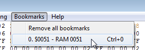

Содержание
Закладки можно добавлять на любой адрес в Hex Editor'е. Кликни по адресу правой кнопкой и выбери Add/Remove bookmark.

Если попытаться добавить закладки на выделенный диапазон адресов, закладка будет добавлена лишь на первый адрес этого диапазона.
В появившемся окне будет предложено изменить имя закладки. После добавления переименовать ее уже не получится.

Даже если закрыть окно через красный крестик, закладка все равно будет добавлена.
Добавленная закладка выделяет байт в адресе зеленым цветом. Однако у цвета закладки низкий приоритет, и он будет перекрываться синим от заморозки и разноцветным при изменении байта в адресе.
Можно использовать закладку не как закладку, а просто как пометку некого адреса зеленым цветом.
Переход к закладке осуществляется во вкладке Bookmarks. На первые 10 закладок есть быстрый переход комбинацией Ctrl + цифра. Hex Editor при переходе переключится на соответствующий режим во вкладке в View.

Чтобы удалить закладку, снова кликни правой кнопкой по этому адресу и выбери Add/Remove Bookmark. Чтобы удалить сразу все закладки, выбери Bookmarks -> Remove all bookmarks и подтверди действие.
Список закладок сохраняется в одноименном файле .deb, который создается/обновляется после закрытия эмулятора.
В этом файле также хранятся некоторые данные из окна Debugger, подробнее читай в соответствующем разделе.